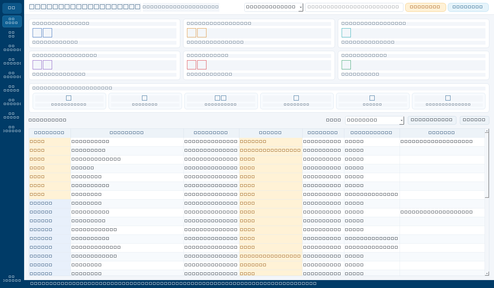
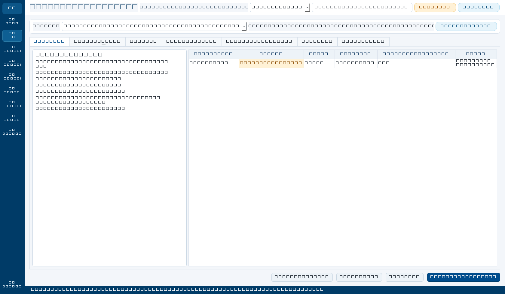
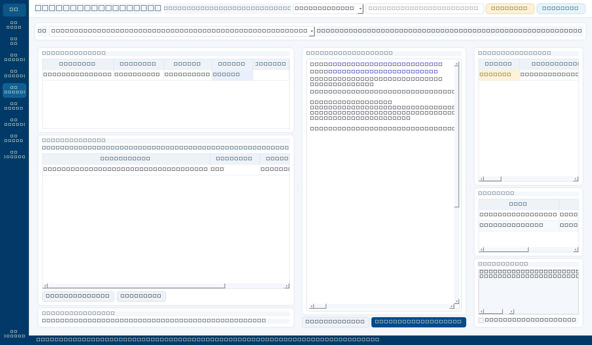

Featured build
SBLC System Prototype
A local standby letter of credit operations platform prototype with lifecycle workflows, document review, compliance packets, billing, and audit-aware design.

Problem
SBLC operations involve high-friction handoffs: party data, lifecycle events, draft review, billing, compliance checks, and audit trails. A strong prototype needs structure without pretending to connect to live banking rails.
Build
A PySide6 and SQLite desktop prototype with command center metrics, LC file workspace, draft generator, compliance packet builder, billing workspace, Excel report exports, and handbook pages.
Control posture
The system is intentionally local and synthetic. It uses demo data, keeps Outlook output as draft metadata only, avoids live SWIFT/sanctions/payment integrations, and treats auditability as a first-class design concern.
Public portfolio disclaimer
All screenshots and reports shown here use synthetic demo records. The prototype does not connect to live banking, sanctions, SWIFT, payment, email, or core-banking systems.
Tools
Workspaces
Investor-demo style surfaces.
The prototype is organized around a management command center, file review workspace, and billing/approval workspace.


Synthetic portfolio only, suitable for public screenshots.
Records who did what, when, and against which entity.
Email and document output remains review-first.
Exports operational, billing, compliance, and data-hygiene workbooks.